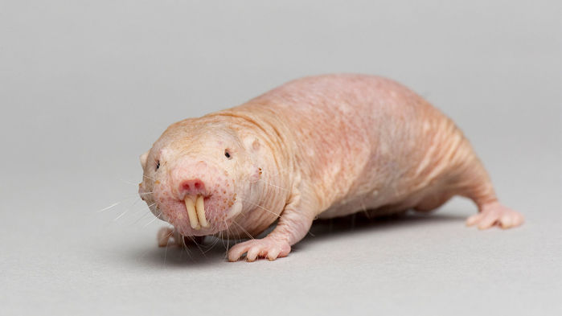

Golec
Golec piaskowy (Heterocephalus glaber) to gryzion zamieszkujący suche tereny wschodniej Afryki, w tym Dżibuti, Etiopię, Kenię i Somalię. Żyje w podziemnych koloniach liczących od 20 do 300 osobników, gdzie panuje ścisły podział ról, a jedynie królowa rozmnaża się. Charakteryzuje się brakiem owłosienia, słabym wzrokiem oraz zdolnością do życia w warunkach niskiego stężenia tlenu
Bober

Bóbr europejski (Castor fiber) występuje w Polsce oraz w innych częściach Europy, od Skandynawii po Hiszpanię, a także w Azji Zachodniej. Po okresie intensywnej eksploatacji został reintrodukowany, a jego liczebność wzrosła do około 147,7 tysiąca osobników. Obecnie jest objęty ochroną częściową. Jego działalność, np. budowa tam, wpływa na ekosystemy, czasem powodując konflikty z człowiekiem.